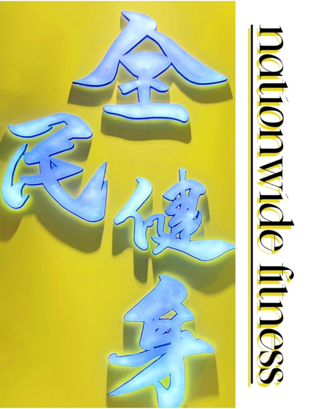

卷首语

岁月无痕，时光如潮水般流逝，花开花落，几度春秋。 当全民健身日来临时，我们都在为全体人民的更加健康和富 强而奋斗的时候，是否记得曾经走过的荆刺，中国体育历史 悠久，走过荆刺，跨过坎坷，成为了现在的体育强国，而全 面健身是我们自信的表现，不仅在体育事业上披荆斩棘，更 要让全民的身体素质都要得到提升，让健身成为一种习惯。 党的二十大报告提出， “广泛开展全民健身活动，加强青少 年体育工作，促进群众体育和竞技体育全面发展，加快建设 体育强国。”
健身是在 20 世纪 80 年代从欧美传入中国的，“谭氏健身 所”是国内第一个现代健身馆。自毛泽东主席提出“发展体 育运动，增强人民体制”以来，全民健身逐渐成为一种全国 性的时尚与风潮。现如， 在国家政策的支持之下， 修建健身房， 健身公园，各种各样的健身场地给人们提供了良好的健身环 境，越来越多人开始重视健身活动，在兰州市的体育公园你 会发现，健身设施齐全，而且不断的及时跟新跟换，早中晚 都有人在锻炼健身， 一方面各种设施的建设吸引了更多的人， 激起了想要锻炼的心理。另一方面为每天锻炼健身的人提供 了训练场地，让健身更有动力，更有激情。
时间，是风平浪静，便需把握机遇、勇往直前；是波涛汹 涌，就应坦然面对、积极调整。只要坚定地随着长河奔涌向前， 放眼两岸都是风景。梦想是金色的， 只要注入了奋斗的汗水。 最可贵的成功，是超越曾经的自己
体育如此， 人生亦如此。在胜利和顺境时不骄傲不浮躁， 在困难和逆境时不消沉不动摇，一拼到底、努力奋斗，有这 样的精神， 一定能大有作为，千有所成。